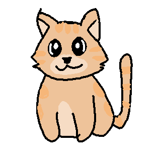

☁ Cats as Pets ☁

Pros
- Are independent and don't require the same level of attention as dogs
- Are easy to care for and don't need to go outside to use the bathroom
- Long lifespans among pets
- Great choice for apartments
- Are generally clean
Cons
- Are quite destructive to furniture and cups
- Claws need to be trimmed regularly and requires trips to vet annually
- If left alone too long, they can become depressed and develop behavior problems
- They shed fur
Cats are generally clean pets and are a great choice for apartment dwelling people. Although not as high maintenance
as dogs, you still need to play with them, clean litter boxes and shedded fur. They enjoy scratching with their claws
and may damage furniture. If you want a companion without having to exhaust too much energy, then a cat is a great
choice.
Go Back